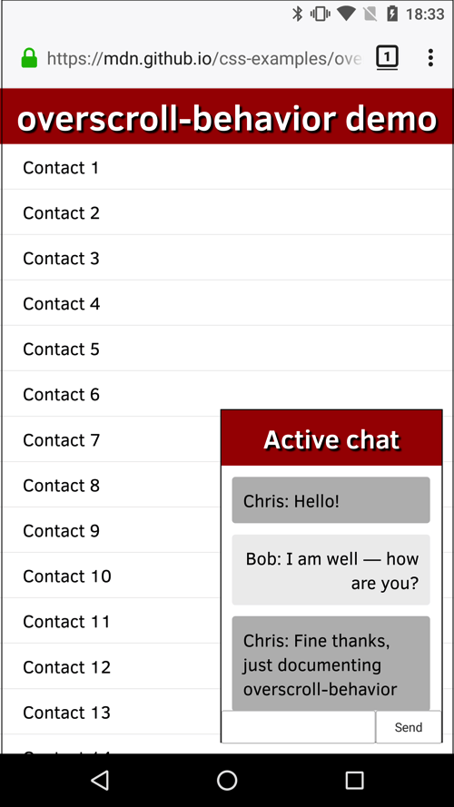

The overscroll-behavior CSS property sets what a browser does when reaching the boundary of a scrolling area. It's a shorthand for {{cssxref("overscroll-behavior-x")}} and {{cssxref("overscroll-behavior-y")}}.
/* Keyword values */ overscroll-behavior: auto; /* default */ overscroll-behavior: contain; overscroll-behavior: none; /* Two values */ overscroll-behavior: auto contain; /* Global values */ overscroll-behavior: inherit; overscroll-behavior: initial; overscroll-behavior: revert; overscroll-behavior: unset;
By default, mobile browsers tend to provide a "bounce" effect or even a page refresh when the top or bottom of a page (or other scroll area) is reached. You may also have noticed that when you have a dialog box with scrolling content on top of a page of scrolling content, once the dialog box's scroll boundary is reached, the underlying page will then start to scroll — this is called scroll chaining.
In some cases these behaviors are not desirable. You can use overscroll-behavior to get rid of unwanted scroll chaining and the browser's Facebook/Twitter app-inspired "pull to refresh"-type behavior.
The overscroll-behavior property is specified as one or two keywords chosen from the list of values below.
Two keywords specifies the overscroll-behavior value on the x and y axes respectively. If only one value is specified, both x and y are assumed to have the same value.
autocontainnone{{cssinfo}}
In our overscroll-behavior example (see the source code also), we present a full-page list of fake contacts, and a dialog box containing a chat window.

Both of these areas scroll; normally if you scrolled the chat window until you hit a scroll boundary, the underlying contacts window would start to scroll too, which is not desirable. This can be stopped using overscroll-behavior-y (overscroll-behavior would also work) on the chat window, like this:
.messages {
height: 220px;
overflow: auto;
overscroll-behavior-y: contain;
}
We also wanted to get rid of the standard overscroll effects when the contacts are scrolled to the top or bottom (e.g. Chrome on Android refreshes the page when you scroll past the top boundary). This can be prevented by setting overscroll-behavior: none on the {{htmlelement("html")}} element:
html {
margin: 0;
overscroll-behavior: none;
}
{{Compat}}